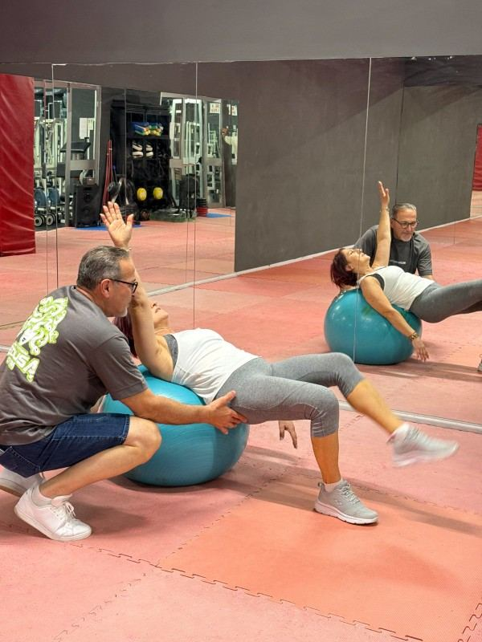

Ermenegildo Pagliaroli
Istruttore certificato ATS
Per tutti è Gildo. Segue ogni lezione di ginnastica posturale, dalla valutazione iniziale al lavoro personalizzato.
Benessere · Roma Cinecittà
Lezioni in piccoli gruppi con Ermenegildo Pagliaroli, istruttore certificato Istituto ATS. Si parte da una valutazione iniziale e si lavora in modo personalizzato su schiena, collo e articolazioni, per muoverti meglio ogni giorno.

La lezione
In un gruppo piccolo l’istruttore conosce la tua postura e segue il tuo lavoro, non solo quello del gruppo.
Si parte guardando come ti muovi e come stai in piedi.
Esercizi scelti per te, dentro una lezione di gruppo.
Il respiro guida il movimento e aiuta a sciogliere le tensioni.
Il metodo ATS procede per fasi, ognuna costruita sulla precedente.
Per chi è
La ginnastica posturale non sostituisce il parere del medico: se hai una patologia o un dolore importante, parlane prima con lui.
Il metodo
È una disciplina riconosciuta dal CONI attraverso il registro ACSI. Il percorso è progressivo, in quattro fasi, ed è pensato per chi ha dolori a schiena e articolazioni. Da noi la insegna un istruttore certificato ATS.
Si parte da come sei oggi: postura, movimento, punti deboli.
Pochi partecipanti, per un lavoro davvero personalizzato.
Un percorso progressivo: si passa alla fase successiva quando sei pronto.
Quello che impari in sala lo porti nella vita di tutti i giorni.
Orari
Due fasce ogni giorno, la mattina e la sera, dal lunedì al venerdì escluso il mercoledì.
Nessuna lezione
Nessuna lezione
Chi ti allena
Istruttore certificato ATS
Per tutti è Gildo. Segue ogni lezione di ginnastica posturale, dalla valutazione iniziale al lavoro personalizzato.
Come iniziare
La prima lezione è gratuita e senza impegno. Vieni, ti alleni con il gruppo e capisci se fa per te. Se ti piace, scegli la formula che ti serve.
Solo posturale
Solo ginnastica posturale, agli orari del corso.
Da aggiungere
La posturale non è compresa nell’OPEN, ma puoi aggiungerla al tuo abbonamento e integrarla con tutte le altre discipline.
È valida per qualsiasi corso e va prenotata, così ti aspettiamo con l’istruttore giusto e tutto pronto.
Domande
Il metodo ATS è pensato proprio per chi ha dolori a schiena e articolazioni. Se hai una patologia o un dolore importante, chiedi prima al tuo medico.
È la Ginnastica Posturale® dell’Istituto ATS, riconosciuta dal CONI tramite il registro ACSI: un percorso progressivo in quattro fasi, insegnato da istruttori certificati.
All’inizio del percorso l’istruttore osserva la tua postura e come ti muovi, per scegliere il lavoro giusto per te.
Si lavora in piccoli gruppi, così ognuno ha un lavoro personalizzato.
No, è separata: puoi farla da sola o aggiungerla all’OPEN.
Lunedì, martedì, giovedì e venerdì, dalle 10.30 alle 11.30 e dalle 18.00 alle 19.00.
Altre domande su iscrizione, orari e pagamenti? Leggi tutte le domande frequenti.
Il primo passo
Più che una palestra, una famiglia. Vieni a conoscerla.
Gli altri corsi